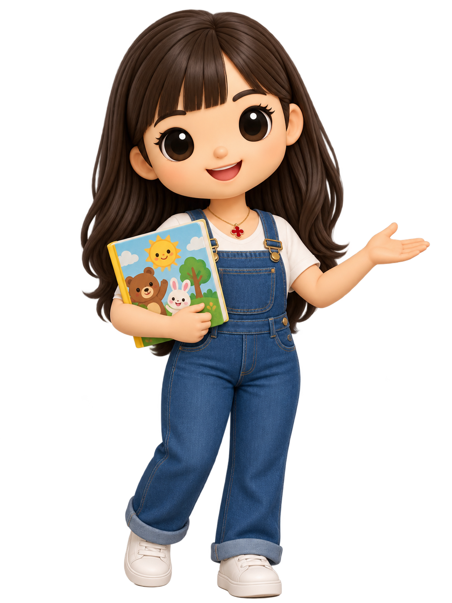
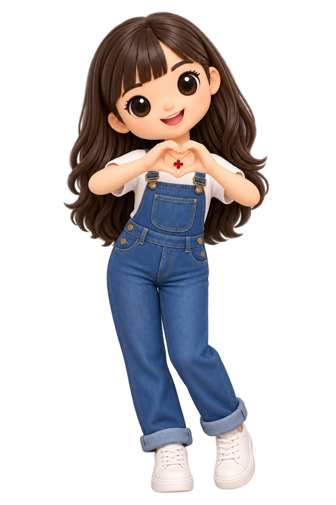
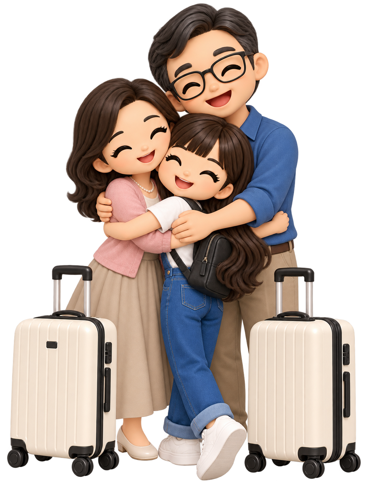
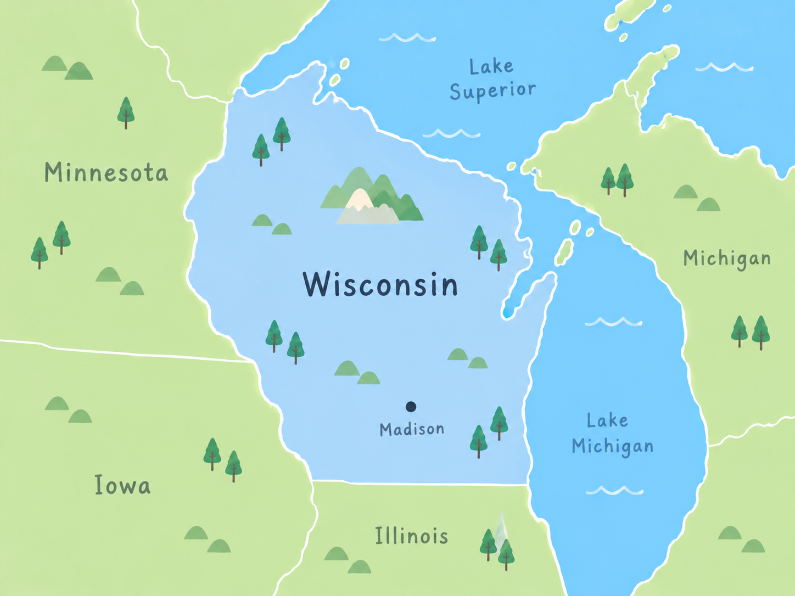
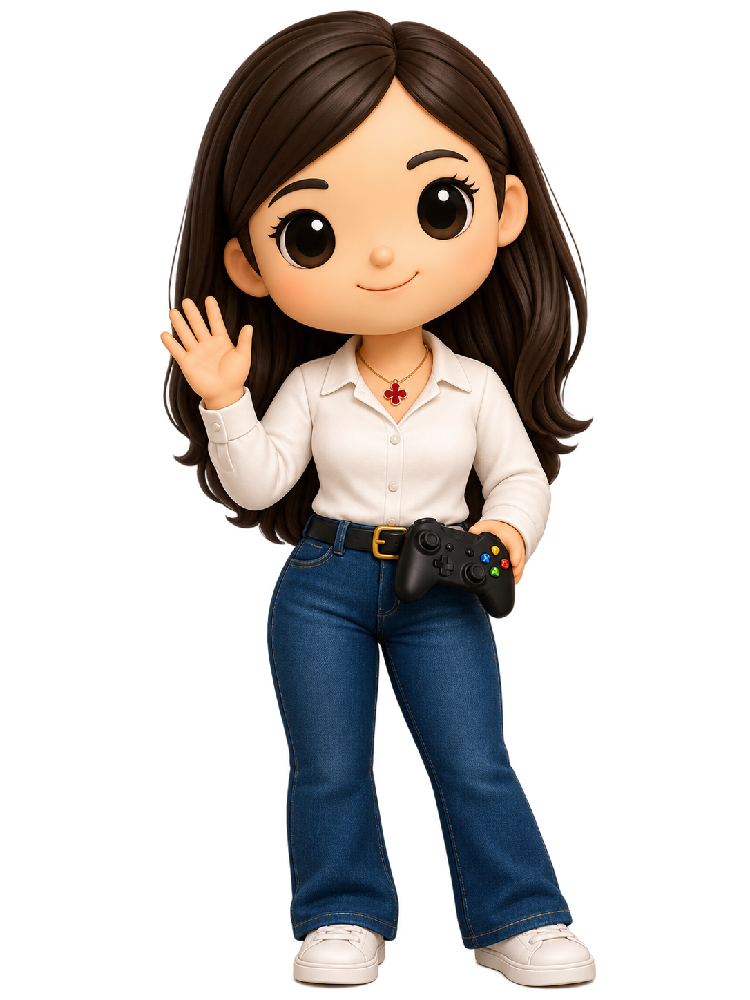
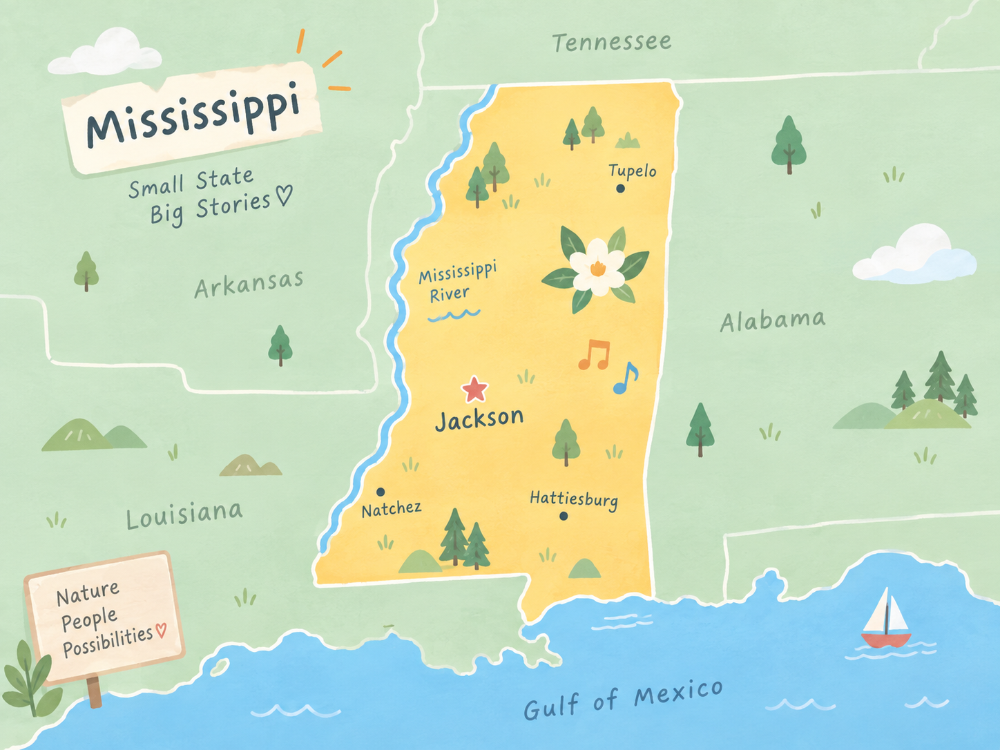

.png)
KITTY’S JOURNEY
One Small Uncomfortable Step at a Time
“I didn’t have the whole journey planned.I only knew it was time to take one small step.”

It began in Taiwan.

Early Childhood Teacher
I loved helping young children learn through stories, play, and imagination.
“This was my comfort zone.”

✦♡✧My comfort zone held so much that I loved.
But I wanted to see a bigger world—to expand what I knew, challenge myself, and grow into someone I hadn’t met yet.
Wanting to grow meant stepping out—and finding the courage to face a whole new world.

Choosing growth meant leaving people I loved.
I knew why I wanted to go. That didn’t make goodbye easy. I carried my family’s love, my questions, and a little courage with me.
I was excited to
go somewhere new...
but honestly,
I was nervous too.


I arrived somewhere unfamiliar.

What did I pick up along the way?
A new language. Unfamiliar tools. Difficult work. Open the suitcase to see what helped me keep going.
The challenges didn’t disappear.I became stronger.
Learning in another language, writing a thesis, and defending my ideas stretched me in ways I never expected.
I questioned myself more than once—but I kept asking, revising, practicing, and showing up.
Graduation wasn’t just a finish line.It was proof that I could grow through difficult things.
I was leaving Wisconsin with new skills, new tools, and a stronger voice—ready to carry them into my next step.


Help me connect the pieces.
Choose a piece to see how it shaped my work.
I stopped trying to fit into one box.
I started bringing education, technology, creativity, and STEM together.
You don’t have to feel ready to begin.
Every step outside my comfort zone has helped me grow.
From graduate school to designing learning experiences, each challenge prepared me for the next.
One small step opened opportunities I never expected.
Take one curious, courageous step—and let it lead you somewhere you never imagined.
What small step will you take today?